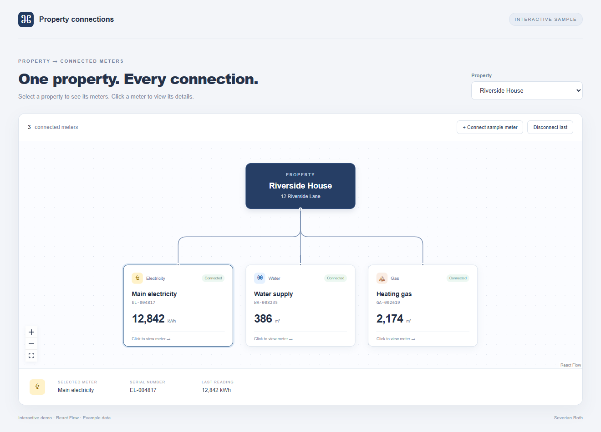

React · Relationship diagrams
Make the graph
follow the records.
A property has three meters. Disconnect one, and the diagram should show two. The interesting decision is where that change lives.
I built a small React Flow example that displays a property above its connected utility meters. You can switch properties, inspect a meter, connect a new sample meter, and disconnect the last one. The records are fictional and stay in browser memory.
The tempting implementation keeps a list of connected meter IDs, another list of graph nodes, and another list of edges. A disconnect handler then has three places to update. Miss one, and the interface can contradict its own count.

Derive the picture from membership
In this example, each property owns a connectedMeters array. Meter records live separately. A pure graphFor(property, meters) function looks up those IDs and produces the nodes and edges for rendering.
Connecting a sample meter adds its record and appends its ID to the selected property's membership. Disconnecting removes a membership entry. Both changes flow through the same graph function. There is no second stored edge list to keep synchronized.
This applies React's guidance on avoiding redundant state: calculate a value from the state already available when you can. Here, the graph is a projection of the records. The viewport and selected node are separate interface concerns.
Give identity a stable representation
A node's identity needs to survive changes to the diagram. An array position describes where a record happens to appear; it does not identify the record. The adapter uses property: and meter: prefixes followed by the underlying ID.
Those prefixes also separate record types. A property and a meter can both have the source ID same without colliding in the graph: their node IDs become property:same and meter:same. Edge endpoints use those same node IDs.
The adapter deduplicates membership IDs before rendering. It returns unresolved references in a separate missing array and draws only meters it can actually find. The current demo does not show that diagnostic in the interface; a connected production application would need to decide how to surface incomplete data. A missing record should never become an invented meter.
Resolve selection against the current graph
The details panel stores a selected ID, then looks up the meter in the current graph. It does not store a second copy of the selected meter object:
const selected = graph.nodes.find(
n => n.id === selectedId && n.type === 'meter'
)?.data;Changing properties clears the selection. Disconnecting also clears it. Looking up the ID within the current graph provides another useful property: the details panel can only resolve a meter that belongs to the displayed view.
Choose what the canvas can edit
This is a relationship viewer with explicit connect and disconnect buttons. It sets React Flow's nodesDraggable and nodesConnectable props to false. The library still provides the canvas, handles, edges, zoom controls and click events.
For a freeform editor, the library's interactivity guide provides change handlers and utilities for applying node and edge changes. That would require a deliberate decision about which gestures alter business relationships and which only alter layout. A dragged line should not accidentally become an authorized database update.
Check the relationship, then the interface
The source includes three model tests: linked records with colliding IDs; duplicate and missing references; and stable IDs after relationship changes, including an empty property. Run node --test model.test.mjs from the extracted source directory.
In the browser, Riverside House starts with three meters. Connect a sample to reach four, then disconnect to return to three. Switch to Orchard Studio to see its one meter, or to the unassigned property for the empty state. Selecting a meter shows its serial number and reading. These checks exercise the records and the visible result together.
There is no persistence or live metering integration here. The example establishes a smaller useful contract: each visible connection can be traced back to a membership entry, and changing that membership produces the next view.
Reproduce the example: interactive demo · source and tests · verification record.
Existing dependencies: React and React DOM 19.2.8, React Flow 12.11.6, esbuild 0.28.2. Exact versions and MIT license notices are included with the source. The diagram implementation is unchanged for this article.